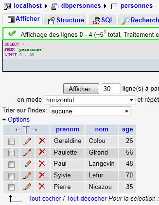

7. استخدام نظام إدارة قواعد البيانات MySQL
سنكتب نصوص PHP باستخدام قاعدة بيانات MySQL:
 |
نظام إدارة قواعد البيانات MySQL مضمن في حزمة WampServer (انظر القسم 2.1.1). سنوضح كيفية إنشاء قاعدة بيانات ومستخدم MySQL.
 |
- بمجرد تشغيل WampServer، يمكن إدارته عبر أيقونة [1] موجودة في أسفل يمين شريط المهام.
- في [2]، قم بتشغيل أداة إدارة MySQL
أنشئ قاعدة بيانات [dbpersonnes]:

أنشئ مستخدمًا [admpersonnes] بكلمة مرور [nobody]:
 |  |
 |
- في [1]، اسم المستخدم
- في [2]، خادم نظام إدارة قواعد البيانات الذي تمنح عليه الأذونات
- في [3]، كلمة المرور الخاصة بهم
- في [4]، كما هو مذكور أعلاه
- في [5]، لا نمنح أي حقوق لهذا المستخدم
- في [6]، قم بإنشاء المستخدم
 |
- في [7]، نعود إلى الصفحة الرئيسية لـ phpMyAdmin
- في [8]، استخدم رابط [Privileges] في هذه الصفحة لتعديل امتيازات المستخدم [admpersonnes] [9].
 |

- في [10]، حدد أنك تريد منح المستخدم [admpersonnes] حقوقًا في قاعدة البيانات [dbpersonnes]
- في [11]، قم بتأكيد الاختيار
 |
- باستخدام الرابط [12] [تحديد الكل]، ومنح المستخدم [admpersonnes] جميع الحقوق في قاعدة البيانات [dbpersonnes] [13]
- قم بالتأكيد في [14]
الآن لدينا:
- قاعدة بيانات MySQL [dbpersonnes]
- مستخدم [admpersonnes / nobody] لديه حق الوصول الكامل إلى قاعدة البيانات هذه
سنكتب نصوص PHP للعمل مع قاعدة البيانات. تحتوي PHP على مكتبات متنوعة لإدارة قواعد البيانات. سنستخدم مكتبة PDO (PHP Data Objects)، التي تعمل كواجهة بين كود PHP ونظام إدارة قواعد البيانات (DBMS):
 |
تسمح مكتبة PDO لبرنامج PHP النصي بأن ينأى بنفسه عن الطبيعة الدقيقة لنظام إدارة قواعد البيانات المستخدم. وبالتالي، كما هو موضح أعلاه، يمكن استبدال نظام إدارة قواعد البيانات MySQL بنظام إدارة قواعد البيانات Postgres بأقل تأثير ممكن على كود برنامج PHP النصي. هذه المكتبة غير متوفرة بشكل افتراضي. يمكنك التحقق من توفرها على كما يلي:
 |
- 1: من أيقونة إدارة WampServer، حدد الخيار [PHP / PHP extensions]
- 2: سترى الملحقات PDO المتاحة المختلفة وتلك النشطة: [PHP_pdo_mysql] لنظام إدارة قواعد البيانات MySQL، و[PHP_pdo_sqlite] لنظام إدارة قواعد البيانات SQLite. لتمكين ملحق، ما عليك سوى النقر عليه. ثم يتم إعادة تشغيل مترجم PHP مع تمكين الملحق الجديد.
7.1. الاتصال بقاعدة بيانات MySQL – 1 (mysql_01)
يتم الاتصال بنظام إدارة قواعد البيانات (DBMS) عن طريق إنشاء كائن PDO. ويقبل منشئ الكائن معلمات متنوعة:
المعلمات لها المعاني التالية:
$dsn | (اسم مصدر البيانات) هو سلسلة تحدد نوع نظام إدارة قواعد البيانات وموقعه على الإنترنت. تشير السلسلة "mysql:host=localhost" تشير إلى أننا نتعامل مع نظام إدارة قواعد البيانات MySQL يعمل على الخادم المحلي. قد تتضمن هذه السلسلة قد تتضمن معلمات أخرى، مثل منفذ الاستماع لنظام إدارة قواعد البيانات واسم قاعدة البيانات التي الذي تريد الاتصال به: "mysql:host=localhost:port=3306:dbname=dbpersonnes". |
$user | اسم المستخدم الذي يقوم بتسجيل الدخول |
$passwd | كلمة المرور الخاصة به |
$driver_options | مصفوفة من الخيارات لمحرك قاعدة البيانات |
المعلمة الأولى هي المطلوبة فقط. وسيكون الكائن الذي تم إنشاؤه بهذه الطريقة بمثابة الوسيلة لجميع العمليات التي يتم إجراؤها على قاعدة البيانات التي قمت بالاتصال بها. إذا تعذر إنشاء كائن PDO، يتم إصدار استثناء PDOException.
فيما يلي مثال على الاتصال:
<?php
// connection to a MySql database
// user identity is (admpersonnes,nobody)
$ID = "admpersonnes";
$PWD = "nobody";
$HOTE = "localhost";
try {
// connection
$dbh = new PDO("mysql:host=$HOTE", $ID, $PWD);
print "Connexion réussie\n";
// closure
$dbh = null;
} catch (PDOException $e) {
print "Erreur : " . $e->getMessage() . "\n";
exit();
}
النتائج:
تعليقات
- السطر 11: يتم إنشاء الاتصال بنظام إدارة قواعد البيانات (DBMS) عن طريق إنشاء كائن PDO. يتم استخدام المنشئ هنا مع المعلمات التالية:
- سلسلة تحدد نوع نظام إدارة قواعد البيانات وموقعه على الإنترنت. تشير السلسلة "mysql:host=localhost" إلى أننا نتعامل مع نظام إدارة قواعد بيانات MySQL يعمل على الخادم المحلي. لم يتم تحديد المنفذ. لذلك يتم استخدام المنفذ 3306 افتراضيًا. لم يتم تحديد اسم قاعدة البيانات أيضًا. سيتم بعد ذلك إنشاء اتصال بنظام إدارة قواعد البيانات MySQL، مع اختيار قاعدة بيانات محددة يتم إجراؤه لاحقًا.
- معرف المستخدم
- كلمة المرور الخاصة به
- السطر 14: يتم إغلاق الاتصال عن طريق إتلاف كائن PDO الذي تم إنشاؤه في البداية.
- السطر 15: قد يفشل الاتصال بنظام إدارة قواعد البيانات. في هذه الحالة، يتم إلقاء استثناء PDOException.
7.2. إنشاء جدول MySQL (mysql_02)
<?php
// connection to the MySql database
// user identity
$ID = "admpersonnes";
$PWD = "nobody";
// base identity
$DSN = "mysql:host=localhost;dbname=dbpersonnes";
// connection
list($erreur, $connexion) = connecte($DSN, $ID, $PWD);
if ($erreur) {
print "Erreur lors de la connexion à la base [$DSN] sous l'identité ($ID,$PWD) : $erreur\n";
exit;
}
// delete the people table if it exists
$requête = "drop table personnes";
$erreur = exécuteRequête($connexion, $requête);
//was there a mistake?
if ($erreur)
print "$requête : Erreur ($erreur)\n";
else
print "$requête: Exécution réussie\n";
// create people table
$requête = "create table personnes (prenom varchar(30) NOT NULL, nom varchar(30) NOT NULL, age integer NOT NULL, primary key(nom,prenom))";
$erreur = exécuteRequête($connexion, $requête);
//was there a mistake?
if ($erreur)
print "$requête : Erreur ($erreur)\n";
else
print "$requête: Exécution réussie\n";
// disconnect and exit
déconnecte($connexion);
exit;
// ---------------------------------------------------------------------------------
function connecte($dsn, $login, $pwd) {
// connects ($login,$pwd) to base $dsn
// returns the connection id and an error code
try {
// connection
$dbh = new PDO($dsn, $login, $pwd);
// error-free return
return array("", $dbh);
} catch (PDOException $e) {
// return with error
return array($e->getMessage(), null);
}
}
// ---------------------------------------------------------------------------------
function déconnecte($connexion) {
// closes the connection identified by $connexion
$connexion = null;
}
// ---------------------------------------------------------------------------------
function exécuteRequête($connexion, $sql) {
// executes the $sql request on the $connexion connection
try {
$connexion->exec($sql);
// error-free return
return "";
} catch (PDOException $e) {
// return with error
return $e->getMessage();
}
}
النتائج:
drop table personnes: Exécution réussie
create table personnes (prenom varchar(30) NOT NULL, nom varchar(30) NOT NULL, age integer NOT NULL, primary key(nom,prenom)): Exécution réussie
في PHPMyAdmin، يمكنك رؤية أن الجدول موجود:
 |
تعليقات
- الأسطر 38–50: تقوم الدالة
connectبإنشاء اتصال بنظام إدارة قواعد البيانات (DBMS). وتُرجع مصفوفة ($error, $connection*) حيث يمثل$connection*الاتصال الذي تم إنشاؤه أوnullإذا تعذر إنشاء الاتصال. وفي الحالة الأخيرة، يحتوي$errorعلى رسالة خطأ. - الأسطر 53–56: تغلق الدالة
*disconnect* الاتصال - السطر 59: تسمح لك الدالة
*executeQueryبتنفيذ عبارة SQL على اتصال. الاتصال هو كائن PDO. الطريقة المستخدمة لتنفيذ عبارة SQL على كائن PDO هي الطريقة exec* (السطر 63). قد يؤدي تنفيذ الاستعلام إلى إثارة استثناء PDOException. لذلك، يتم التعامل مع هذا الأمر. ترجع الدالة رسالة خطأ في حالة حدوث خطأ، وإلا ترجع سلسلة فارغة.
7.3. ملء جدول people (mysql_03)
ينفذ البرنامج النصي التالي عبارات SQL الموجودة في الملف النصي التالي [creation.txt]:
drop table personnes
create table personnes (prenom varchar(30) not null, nom varchar(30) not null, age integer not null, primary key (nom,prenom))
insert into personnes values('Paul','Langevin',48)
insert into personnes values ('Sylvie','Lefur',70)
insert into personnes values ('Pierre','Nicazou',35)
insert into personnes values ('Geraldine','Colou',26)
insert into personnes values ('Paulette','Girond',56)
<?php
// connection to the MySql database
// user identity
$ID = "admpersonnes";
$PWD = "nobody";
// base identity
$DSN = "mysql:host=localhost;dbname=dbpersonnes";
// identity of the SQL command text file to be executed
$TEXTE = "creation.txt";
// connection
list($erreur, $connexion) = connecte($DSN, $ID, $PWD);
if ($erreur) {
print "Erreur lors de la connexion à la base [$DSN] sous l'identité ($ID,$PWD) : $erreur\n";
exit;
}
// table creation and filling
$erreurs = exécuterCommandes($connexion, $TEXTE, 1, 0);
//display number of errors
print "il y a eu $erreurs[0] erreurs\n";
for ($i = 1; $i < count($erreurs); $i++)
print "$erreurs[$i]\n";
// disconnect and exit
déconnecte($connexion);
exit;
// ---------------------------------------------------------------------------------
function connecte($dsn, $login, $pwd) {
...
}
// ---------------------------------------------------------------------------------
function déconnecte($connexion) {
...
}
// ---------------------------------------------------------------------------------
function exécuteRequête($connexion, $sql) {
// executes the $sql request on the $connexion connection
// returns 1 error msg if error, empty string otherwise
...
}
// ---------------------------------------------------------------------------------
function exécuterCommandes($connexion, $SQL, $suivi=0, $arrêt=1) {
// uses the $connexion connection
// executes the SQL commands contained in the $SQL text file
// this is a file of SQL commands to be executed one per line
// if $suivi=1 then each execution of a SQL order is displayed as a success or failure
// if $arrêt=1, the function stops on the 1st error encountered, otherwise it executes all sql commands
// the function returns an array (nb of errors, error1, error2, ...)
// check for the presence of the $SQL file
if (! file_exists($SQL))
return array(1, "Le fichier $SQL n'existe pas");
// execution of SQL queries contained in $SQL
// we put them in a table
$requêtes = file($SQL);
// we run them - initially no errors
$erreurs = array(0);
for ($i = 0; $i < count($requêtes); $i++) {
//do we have an empty query
if (preg_match("/^\s*$/", $requêtes[$i]))
continue;
// execute query $i
$erreur = exécuteRequête($connexion, $requêtes[$i]);
//was there a mistake?
if ($erreur) {
// one more mistake
$erreurs[0]++;
// error msg
$msg = "$requêtes[$i] : Erreur ($erreur)\n";
$erreurs[] = $msg;
// screen tracking or not?
if ($suivi)
print "$msg\n";
// shall we stop?
if ($arrêt)
return $erreurs;
} else
if ($suivi)
print "$requêtes[$i] : Exécution réussie\n";
}//for
// return
return $erreurs;
}
نتائج الشاشة:
drop table personnes : Exécution réussie
create table personnes (prenom varchar(30) not null, nom varchar(30) not null, age integer not null, primary key (nom,prenom)) : Exécution réussie
insert into personnes values('Paul','Langevin',48) : Exécution réussie
insert into personnes values ('Sylvie','Lefur',70) : Exécution réussie
insert into personnes values ('Pierre','Nicazou',35) : Exécution réussie
insert into personnes values ('Geraldine','Colou',26) : Exécution réussie
insert into personnes values ('Paulette','Girond',56) : Exécution réussie
il y a eu 0 erreurs
يمكن رؤية الإدخالات التي تمت في phpMyAdmin:
 |
التعليقات
الميزة الجديدة هي دالة executeCommands في الأسطر 48–90. تنفذ هذه الدالة أوامر SQL الموجودة في الملف النصي المسمى $SQL على $connection. وتُرجع مصفوفة أخطاء ($nbErrors, $msg1, $msg2, …) حيث $nbErrors هو عدد الأخطاء، و$msg1 هو رسالة الخطأ رقم i. إذا لم تكن هناك أخطاء، فإن المصفوفة المُرجعة هي array(0).
7.4. تنفيذ استعلامات SQL عشوائية (mysql_04)
يوضح البرنامج النصي التالي تنفيذ أوامر SQL من الملف النصي التالي [sql.txt]:
select * from personnes
select nom,prenom from personnes order by nom asc, prenom desc
select * from personnes where age between 20 and 40 order by age desc, nom asc, prenom asc
insert into personnes values('Josette','Bruneau',46)
update personnes set age=47 where nom='Bruneau'
select * from personnes where nom='Bruneau'
delete from personnes where nom='Bruneau'
select * from personnes where nom='Bruneau'
xselect * from personnes where nom='Bruneau'
من بين عبارات SQL هذه، هناك عبارة SELECT، التي تعرض نتائج من قاعدة البيانات؛ وعبارات INSERT و UPDATE و DELETE، التي تعدل قاعدة البيانات دون عرض نتائج؛ وأخيرًا، العبارات غير الصحيحة مثل العبارة الأخيرة (xselect).
<?php
// connection to the MySql database
// user identity
$ID = "admpersonnes";
$PWD = "nobody";
// base identity
$DSN = "mysql:host=localhost;dbname=dbpersonnes";
// identity of the SQL command text file to be executed
$TEXTE = "sql.txt";
// connection
list($erreur, $connexion) = connecte($DSN, $ID, $PWD);
if ($erreur) {
print "Erreur lors de la connexion à la base [$DSN] sous l'identité ($ID,$PWD) : $erreur\n";
exit;
}
// order execution SQL
$erreurs = exécuterCommandes($connexion, $TEXTE, 1, 0);
//display number of errors
print "il y a eu $erreurs[0] erreur(s)\n";
for ($i = 1; $i < count($erreurs); $i++)
print "$erreurs[$i]\n";
// disconnect and exit
déconnecte($connexion);
exit;
// ---------------------------------------------------------------------------------
function connecte($dsn, $login, $pwd) {
// connects ($login,$pwd) to base $dsn
// returns the connection id and an error msg
...
}
// ---------------------------------------------------------------------------------
function déconnecte($connexion) {
...
}
// ---------------------------------------------------------------------------------
function exécuteRequête($connexion, $sql) {
// executes the $sql request on the $connexion connection
// returns an array of 2 elements ($erreur,$résultat)
// determine whether it's a select or not
$commande = "";
if (preg_match("/^\s*(\S+)/", $sql, $champs)) {
$commande = $champs[0];
}
// order processing
try {
if (strtolower($commande) == "select") {
$res = $connexion->query($sql);
} else {
$res = $connexion->exec($sql);
if($res===FALSE){
$info=$connexion->errorInfo();
return array($info[2],null);
}
}
// error-free return
return array("", $res);
} catch (PDOException $e) {
// return with error
return array($e->getMessage(), null);
}
}
// ---------------------------------------------------------------------------------
function exécuterCommandes($connexion, $SQL, $suivi=0, $arrêt=1) {
// uses the $connexion connection
// executes the SQL commands contained in the $SQL text file
// this is a file of SQL commands to be executed one per line
// if $suivi=1 then each execution of a SQL order is displayed as a success or failure
// if $arrêt=1, the function stops on the 1st error encountered, otherwise it executes all sql commands
// the function returns an array (nb of errors, error1, error2, ...)
// check for the presence of the $SQL file
if (!file_exists($SQL))
return array(1, "Le fichier $SQL n'existe pas");
// execution of SQL queries contained in $TEXTE
// we put them in a table
$requêtes = file($SQL);
// we run them - initially no errors
$erreurs = array(0);
for ($i = 0; $i < count($requêtes); $i++) {
//do we have an empty query
if (preg_match("/^\s*$/", $requêtes[$i]))
continue;
// execute query $i
list($erreur, $res) = exécuteRequête($connexion, $requêtes[$i]);
//was there a mistake?
if ($erreur) {
// one more mistake
$erreurs[0]++;
// error msg
$msg = "$requêtes[$i] : Erreur ($erreur)\n";
$erreurs[] = $msg;
// screen tracking or not?
if ($suivi)
print "$msg\n";
// shall we stop?
if ($arrêt)
return $erreurs;
} else
if ($suivi) {
print "$requêtes[$i] : Exécution réussie\n";
// information on the result of the query
afficherInfos($res);
}
}//for
// return
return $erreurs;
}
// ---------------------------------------------------------------------------------
function afficherInfos($résultat) {
// displays the $résultat result of an sql query
// was it a select?
if ($résultat instanceof PDOStatement) {
// displays field names
$titre = "";
$nbColonnes = $résultat->columnCount();
for ($i = 0; $i < $nbColonnes; $i++) {
$infos = $résultat->getColumnMeta($i);
$titre.=$infos['name'] . ",";
}
// remove the last character ,
$titre = substr($titre, 0, strlen($titre) - 1);
// displays the list of fields
print "$titre\n";
// dividing line
$séparateurs = "";
for ($i = 0; $i < strlen($titre); $i++) {
$séparateurs.="-";
}
print "$séparateurs\n";
// data
foreach ($résultat as $ligne) {
$data = "";
for ($i = 0; $i < $nbColonnes; $i++) {
$data.=$ligne[$i] . ",";
}
// remove the last character ,
$data = substr($data, 0, strlen($data) - 1);
// on affiche
print "$data\n";
}
} else {
// it wasn't a select
print " $résultat lignes(s) a (ont) été modifiée(s)\n";
}
}
نتائج الشاشة:
select * from personnes
: Exécution réussie
prenom,nom,age
--------------
Geraldine,Colou,26
Paulette,Girond,56
Paul,Langevin,48
Sylvie,Lefur,70
Pierre,Nicazou,35
select nom,prenom from personnes order by nom asc, prenom desc : Exécution réussie
nom,prenom
----------
Colou,Geraldine
Girond,Paulette
Langevin,Paul
Lefur,Sylvie
Nicazou,Pierre
select * from personnes where age between 20 and 40 order by age desc, nom asc, prenom asc : Exécution réussie
prenom,nom,age
--------------
Pierre,Nicazou,35
Geraldine,Colou,26
insert into personnes values('Josette','Bruneau',46) : Exécution réussie
1 lignes(s) a (ont) été modifiée(s)
update personnes set age=47 where nom='Bruneau' : Exécution réussie
1 lignes(s) a (ont) été modifiée(s)
select * from personnes where nom='Bruneau' : Exécution réussie
prenom,nom,age
--------------
Josette,Bruneau,47
delete from personnes where nom='Bruneau' : Exécution réussie
1 lignes(s) a (ont) été modifiée(s)
select * from personnes where nom='Bruneau' : Exécution réussie
prenom,nom,age
--------------
xselect * from personnes where nom='Bruneau' : Erreur (You have an error in your SQL syntax; check the manual that corresponds to your MySQL server version for the right syntax to use near 'xselect * from personnes where nom='Bruneau'' at line 1)
il y a eu 1 erreur(s)
xselect * from personnes where nom='Bruneau' : Erreur (You have an error in your SQL syntax; check the manual that corresponds to your MySQL server version for the right syntax to use near 'xselect * from personnes where nom='Bruneau'' at line 1)
تعليقات
يتم تنفيذ كل أمر في الملف النصي [sql.txt] بواسطة الدالة exécuteRequête في السطر 43.
- السطر 43: المعلمتان للدالة هما الاتصال ($connexion) الذي سيتم تنفيذ أوامر SQL عليه والأمر SQL ($sql) المراد تنفيذه. تُرجع الدالة مصفوفة من قيمتين ($erreur, $résultat) حيث
- $error هي رسالة خطأ، وقد تكون فارغة في حالة عدم حدوث أي خطأ
- $result: النتيجة التي يتم إرجاعها من خلال تنفيذ عبارة SQL. تختلف هذه النتيجة اعتمادًا على ما إذا كانت العبارة عبارة SELECT أو عبارة INSERT أو UPDATE أو DELETE.
- الأسطر 48–51: نسترد العنصر الأول من عبارة SQL لتحديد ما إذا كانت عبارة SELECT أم عبارة INSERT أو UPDATE أو DELETE.
- السطر 55: في حالة عبارة SELECT، يتم تنفيذها باستخدام طريقة [PDO]->query("SELECT statement"). والنتيجة التي يتم إرجاعها هي كائن PDOStatement.
- السطر 57: في حالة وجود جملة INSERT أو UPDATE أو DELETE، يتم تنفيذها باستخدام الطريقة [PDO]->exec("جملة SQL"). والنتيجة التي يتم إرجاعها هي عدد الصفوف التي تم تعديلها بواسطة جملة SQL. وبالتالي، إذا حذفت جملة DELETE في SQL صفين، فإن النتيجة المرجعة هي العدد الصحيح 2. وإذا حدث خطأ أثناء التنفيذ، فإن النتيجة المرجعة هي القيمة المنطقية false. في هذه الحالة، توفر طريقة [PDO]->errorinfo() معلومات حول الخطأ في شكل مصفوفة من القيم. العنصر الموجود في الفهرس 2 من هذه المصفوفة هو رسالة الخطأ.
- الأسطر 58–60: معالجة أي أخطاء من عملية [PDO]->exec("SQL statement").
- الأسطر 65–68: معالجة أي استثناءات
- السطر 72: تقوم الدالة
executeCommandsبتنفيذ أوامر SQL المخزنة في الملف النصي*$SQL*على الاتصال*$connection*. هذا هو الكود الذي رأيناه بالفعل، مع اختلاف بسيط واحد: السطر 111. - السطر 111: عادت الدالة
executeQueryبمصفوفة (*$error*, *$result*)، حيث$result*هي نتيجة تنفيذ أمر SQL. تختلف هذه النتيجة اعتمادًا على ما إذا كان أمر SQL عبارة عن جملةSELECT*أو جملةINSERT*أوUPDATE*أوDELETE*. تعرض الدالةdisplayInfo* معلومات حول هذه النتيجة. - السطر 122: إذا كان جملة SQL عبارة عن جملة SELECT، فإن النتيجة تكون من النوع PDOStatement. يمثل هذا النوع جدولًا يتكون من صفوف وأعمدة.
- السطر 125: تُرجع الطريقة [PDOStatement]->getColumnCount() عدد الأعمدة في الجدول الناتج عن SELECT
- السطر 127: تُرجع الطريقة [PDOStatement]->getMeta(i) قاموسًا من المعلومات حول العمود i في جدول نتائج SELECT. في هذا القاموس، القيمة المرتبطة بمفتاح 'name' هي اسم العمود.
- الأسطر 127–129: يتم ربط أسماء الأعمدة من جدول نتائج SELECT في سلسلة.
- الأسطر 141–145: يمكن تكرار كائن PDOStatement باستخدام حلقة foreach. في كل تكرار، يكون العنصر المُرجع هو صف من جدول نتائج SELECT في شكل مصفوفة من القيم تمثل قيم الأعمدة المختلفة للصف. نعرض كل هذه القيم باستخدام حلقة for.
- السطر 154: نتيجة تنفيذ عبارة INSERT أو UPDATE أو DELETE هي عدد الصفوف التي تم تعديلها بواسطة العبارة.